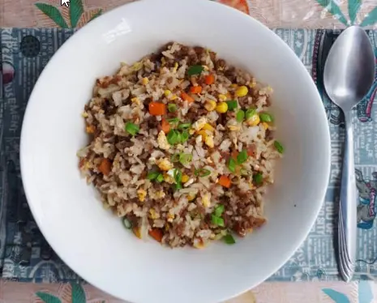

Beef Chao Fan

Description:
Beef Chao Fan is a Chinese inspired Filipino Fried Rice recipe that is mixed with
ground beef, chopped vegetables, onion & garlic, and it seasoned with soy and
oyster sauce. This rice dish is an inspiration from a popular Filipino fast-food
restaurant Chowking.
Ingredients:
- 4 cup of cooked white rice
- 250 grams of ground beef
- 1 cup of red onion chopped
- 3 cloves of garlic chopped
- 2.5 tablespoon of soy sauce
- 2 tablespoon of oyster sauce
- ½ cup of chopped carrot
- ½ cup of corn kernel
- 2 cup of cabbage chopped
- ½ cup of spring onion stalk chopped
- 2 eggs
- 4 tablespoon of canola oil 2 for scrambled egg and 2 for the fried rice
- Salt and black pepper for taste
Instructions:
Cooking Scrambled Egg
- Add 2 tablespoons of vegetable oil to the pan in medium heat.
-
Crack the egg into a small bowl, and add salt & black pepper. Stir to mix
-
Once the oil is hot, pour the egg into the pan. Stir gently till the scrambled
egg is cooked.
- Use a fork or a wooden spoon to cut into smaller pieces. Set aside.
Making the Fried Rice
-
Add vegetable oil to a large pan. Once hot, add chopped garlic. Stir for 30
seconds and then add the chopped red onion. Stir again till it turns
translucent.
-
Add the ground beef. Stir again and let it cook till the juices are almost
evaporated.
- Add the soy sauce and oyster sauce and continue stirring for 15 seconds
- Add the chopped cabbages, carrots, and corn kernel. Give a quick stir.
- Add the cooked leftover white rice, Gently stir to mix.
-
Transfer the scrambled egg and chopped spring onion stalk. Mix to stir for one
more time before turning off the heat.
- Serve with lumpia, siomai, or chopsuey.